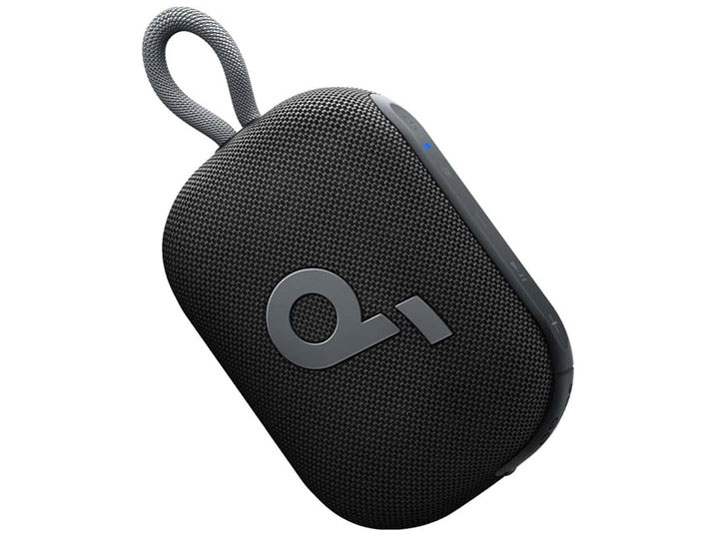
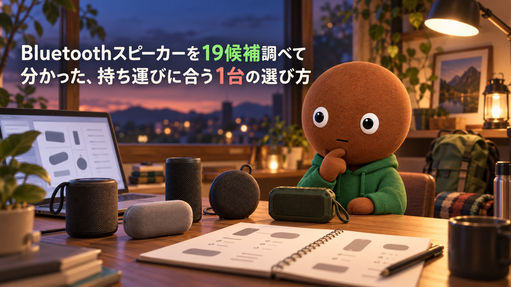
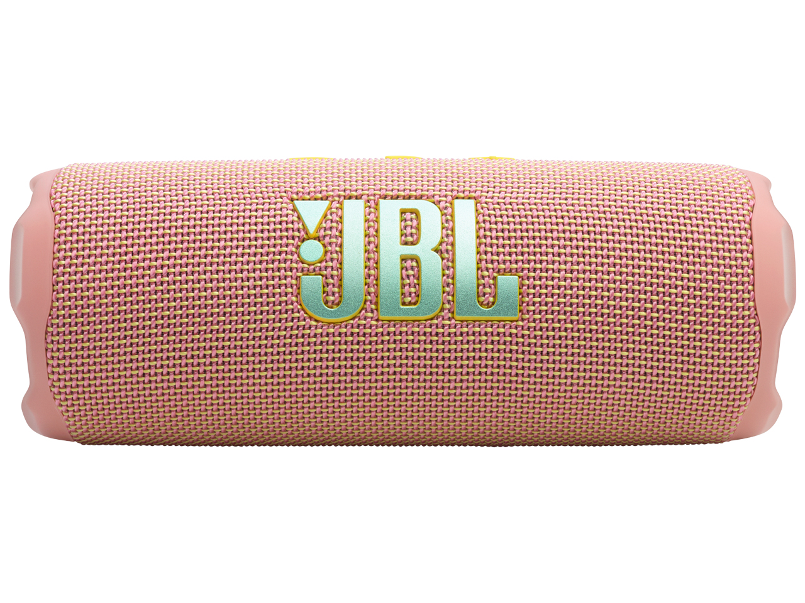
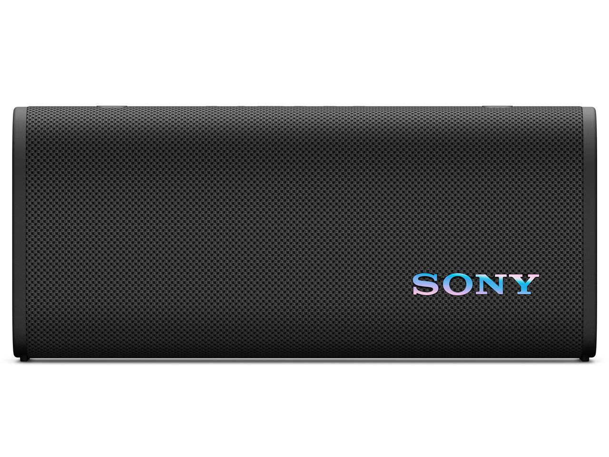
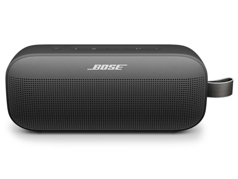
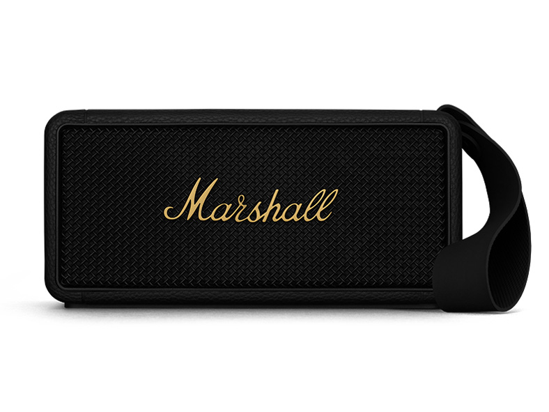
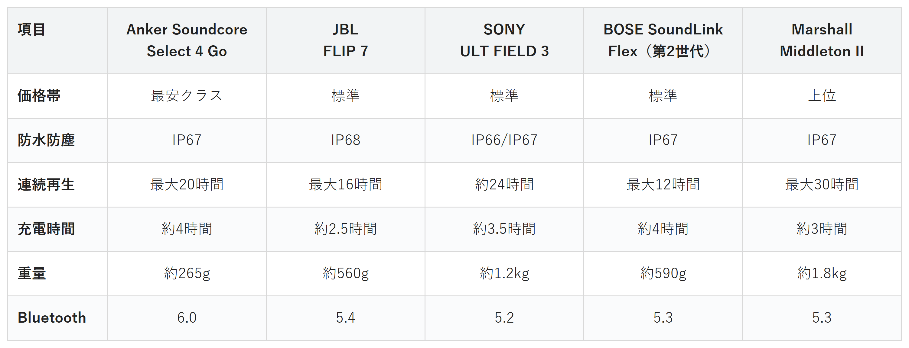

Amazonで見るお風呂やキャンプで音楽を聴きたい人へ
持ち運び用Bluetoothスピーカー19候補を調査。防水性能・再生時間・重量から、選び方の違う5商品を比較しました。
自分に合うスピーカーを探す
この記事はAmazonアソシエイト・プログラムの参加者として、紹介料を得る場合があります（PR）。仕様は調査時点の情報です。
19候補から、選び方の違う5商品に絞りました。まずは気になる1台へ。向いている人・向いていない人と、低評価レビューもまとめています。
あなたの使い方に合う、1台を。

Amazonで見る
Amazonで見る
Amazonで見る
Amazonで見る
Amazonで見る横にスワイプして、5商品を見比べる
調べてわかったのは、基準はシンプルでした。
1つ目は「使うシーン」。お風呂やビーチで使うのか、デスクで作業用に置くのかで、必要な防水性能やサイズがまったく違います。
2つ目は「重視する音の傾向」。低音の迫力を求めるのか、バランスの良さを求めるのかで、選ぶべき機種が変わります。
価格帯には、かなり幅がありました。

価格帯・防水防塵・連続再生・充電時間・重量・Bluetoothバージョンの比較（価格帯は最安クラス〜最上位の5段階）
選ぶ決め手とにかく安さを重視するなら、この1台です。
SoundcoreSelect 4 Goは、
初めてポータブルスピーカーを
試したい人に最も向く1台です。
重量は約265g、手のひらサイズで、
IP67の防水防塵性能も
備えています。
最大20時間の連続再生と、
2台ペアリングでの
ワイヤレスステレオ再生にも対応しています。
5商品の中で最も軽量・コンパクトなので、
まず1台持ち歩くならこれで十分です。
選ぶ決め手防水耐久を重視するなら、この1台です。
JBL FLIP 7は、プールやビーチなど
水回りで安心して使いたい人に
最も向く1台です。
5商品の中で唯一、
IP68の防水防塵等級を
備えています。
Auracast対応で複数台の
スピーカーをつなげられ、専用アプリからの
音質調整にも対応しています。
選ぶ決め手重低音を重視するなら、この1台です。
SONY ULT FIELD 3
（SRS-ULT30）は、低音の迫力から
音楽を楽しみたい人に最も向く1台です。
本体の「ULTボタン」1つで、
低音を強化したサウンドに
切り替えられます。
最大約24時間の連続再生と、
ショルダーストラップでの
持ち運びにも対応しています。
選ぶ決め手バランスを重視するなら、この1台です。
BOSE SoundLink Flex
（第2世代）は、音質のバランスと
ブランドの信頼感を重視したい人に最も向く1台です。
マルチポイント接続で、
2台のデバイスに同時接続し、
シームレスに切り替えられます。
置き方を自動で検知して
音を最適化するPositionIQも
搭載しています。
選ぶ決め手デザインを重視するなら、この1台です。
MarshallMiddleton IIは、
アンプ然としたデザインを
重視したい人に最も向く1台です。
最大30時間という、
5商品の中で最長の
連続再生時間を備えています。
スマホを充電できる
モバイルバッテリー機能も
搭載しています。
重量は約1.8kgと5商品の中で最も重いので、
持ち運びより据え置き寄りの
使い方に向きます。
お風呂やキャンプで音楽を聴きたいのに、水濡れが心配だったりしませんか。
スマホ内蔵のスピーカーだと、音が薄くて低音も物足りなく感じます。Bluetoothスピーカーなら、電源を気にせずどこへでも持ち出せます。なので今回、私が持ち運び用Bluetoothスピーカーのスペックを調べ比較しました。
各商品ごとに、向いてる人・向いてない人も調べているので、自分に合ったスピーカーを探してみてください。
Bluetoothスピーカーは、価格.comの満足度ランキングだけでもたくさんの機種が並ぶジャンルです。
今回は主要候補17件を調べ、価格帯・ブランド・機能が重複しないように5商品まで絞りました。低評価品として、サクラチェッカーで要注意判定だった商品も2件別途調べました。
調査したのは下記19候補です。
Edifier3機種・Bose4機種・JBL3機種・SONY3機種・Anker2機種・JVC1機種・Marshall1機種・無名メーカー2機種（低評価枠）。
SoundLink Homeは、満足度5.00でした。ただBoseの据え置き型で、音声アシスタントを常設した持ち運びとは違う軸のため、対象外にしました。
Edifier ED-MR3・ED-QR65は、満足度5.00でした。レビュー件数が6〜7件と少なく、実績データの厚みで見送りました。
JBL Authentics 200は、電池非搭載でAC電源前提の据え置き型でした。デザイン重視の軸ではMarshallと重複する上、Middleton IIは電池駆動で持ち運びも両立できるため、そちらを優先しました。
Edifier ED-M60は、卓上設置前提の据え置き型に近く、有線スピーカーを扱う別記事（PCスピーカー比較）との差別化が曖昧になるため対象外にしました。
LinkBuds Speakerは、首から下げるマイク一体型です。独自性はありますが、ニッチな用途向けです。同じSONYのULT FIELD 3と重複するため見送りました。
SoundLink Micro・SoundLink Maxは、それぞれ小型軽量・大型大出力の枠で、Anker・Marshallと軸が重複するため見送りました。
JVC VictorSP-WS02BTは、Ankerと価格帯・サイズ感が近く、差別化できる強みを確認できなかったため見送りました。
Anker Motion X500・JBL CLIP 5・SONY ULT FIELD 7は、それぞれ採用商品と同一ブランドで重複するため見送りました。
上の17候補とは別に、サクラチェッカーが「要注意」と判定した商品を調べました。
個別レビュー本文の真偽までは検証できないため、機械的に検出された事実だけを正直に書きます。
MuziliのBluetoothスピーカーは、レビュー件数3,434件とカテゴリ平均732件を大きく上回っていました。公式サイトが無く、本社所在国は推定中国という指摘を受けていました。
ZoeeTreeのBluetoothスピーカーは、サクラチェッカーで危険レベルの判定を受けていました。商品名にキーワードを詰め込んだSEO狙いの可能性も指摘されていました。
19候補を調べる中で、「据え置き型」と「ポータブル型」の境界が意外とあいまいだと実感しました。
Authentics 200のように、Bluetooth対応でも電池を積まず持ち運べないモデルが、満足度ランキングの上位に普通に並んでいました。
防水等級ひとつとっても、IP66・IP67・IP68という似た表記の間に、実際には耐えられる水量の差があると分かりました。
ここまで読んでもまだ迷ったら、IP67の防水性能と軽さを両立したAnker Soundcore Select 4 Goが、外しにくい1台としておすすめです。
Amazonで見る→Q. IP67とIP68の違いは何ですか。
A. どちらも防水・防塵性能を示す等級で、数字が大きいほど耐水性能が高い傾向にあります。今回の5商品ではJBL FLIP 7のみIP68で、他の4商品はIP67またはIP66/IP67です。
Q. 屋外での使用に向いているのはどれですか。
A. 防水等級が高いJBL FLIP 7と、ショルダーストラップで持ち運べるSONY ULT FIELD 3の2台が、屋外での携帯・使用に向いています。
Q. 音質のバランスを重視するならどれがいいですか。
A. マルチポイント接続と自動音場最適化を備えたBOSE SoundLink Flexが、バランスの良さを重視する人に向いています。
Q. スマホの充電に使えるスピーカーはありますか。
A. 今回の5商品の中では、SONY ULT FIELD 3とMarshall Middleton IIがスマホを充電できる機能を備えています。
Q. 複数台のスピーカーをつなげて使えますか。
A. JBL FLIP 7はAuracastで複数台接続に対応しており、Anker Soundcore Select 4 Goも2台のワイヤレスステレオ再生に対応しています。